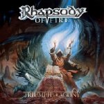

|
|
||
Rhapsody of Fire : Triumph or Agony (2006) |
|

http://www.rhapsodyoffire.com |
1. Dark-Kunor 3:13 |
8.2/10 |
|
Por un problema legal con un servicio de subscripción de música, la conocida banda italiana Rhapsody ha tenido que cambiar de nombre, aunque se han limitado a añadir un "of Fire", con lo que ahora se llaman "Rhapsody of Fire". Por lo demás todo sigue como siempre: metal épico, una orquesta y varios coros al servicio de la banda y los mismos clichés de fantasía heroica para la historia que está detrás de las letras de este nuevo álbum. "Dark-Kunor" es una intro instrumental que comienza suave y atmosférica y que en la segunda parte integra a los coros y la orquesta, aunque no llega a la altura de las más espectaculares de la banda. "Triumph or Agony" es una canción moderadamente rápida, aunque recibe un buen empujón del doble bombo en el estribillo, y pomposa como la que más, atención al coro en latín, aunque como tema de apertura de nuevo se queda algo por debajo de los estándares de Rhapsody. Más cañera resulta "Heart of the Darklands", rápida, con un doble bombo más constante, una guitarra más destacada, aunque a ratos y coros épicos. Arranque tranquilo para "Old Age of Wonders", que es un tema acústico, melódico, que incorpora una voz femenina y acompañamiento de coros. Un aire más oscuro para "The Myth of the Holy Sword", de ritmo marcado, fantástico estribillo y algunos pasajes con coros realmente espectaculares. "Il Canto del Vento" es una balada en italiano, la única canción no compuesta por Luca Turilli y Alex Staropoli sino por el vocalista Fabio Lione, donde lo único que destaca un poco es el estribillo. Buen arranque para "Silent Dream", un medio tiempo bastante directo, para ser de Rhapsody, potente y con un decente estribillo melódico. "Bloody Red Dungeons" es otra pieza lenta, con algunos cambios de ritmo, y relativamente directa, aunque los coros que aparecen son realmente majestuosos. "Son of Pain" es una canción atmosférica y tranquila, aunque tiene momentos de bastante intensidad alrededor del estribillo. "The Mystic Prophecy of the Demonknight" es un tema genial, muy largo, con muchos elementos bien diferenciadas: secciones acústicas, tiempos medios, los mejores coros del disco, barrocas partes instrumentales, una soprano, una parte narrada (que incluye de nuevo a Christopher Lee), doble bombo, voces demoníacas y ambientes tétricos, y un final realmente épico. Espectaculares coros épicos en la primera parte de "Dark Reign of Fire", que pasa a ser una canción lenta, pero pomposa, que cierra el álbum con una atmósfera cargada de magia. El disco tiene algunos puntos criticables: las canciones más cañeras son un poco sosas, hay demasiados temas lentos, y los estribillos no son tan pegadizos como solían ser. Sin embargo el conjunto es épico, pomposo y tiene de todo, así que aunque se incline demasiado del lado de las canciones lentas, es un buen trabajo de Rhapsody, aunque ahora se llamen Rhapsody of Fire. |
||
- Crítica escrita por Rubén Béjar - |
||